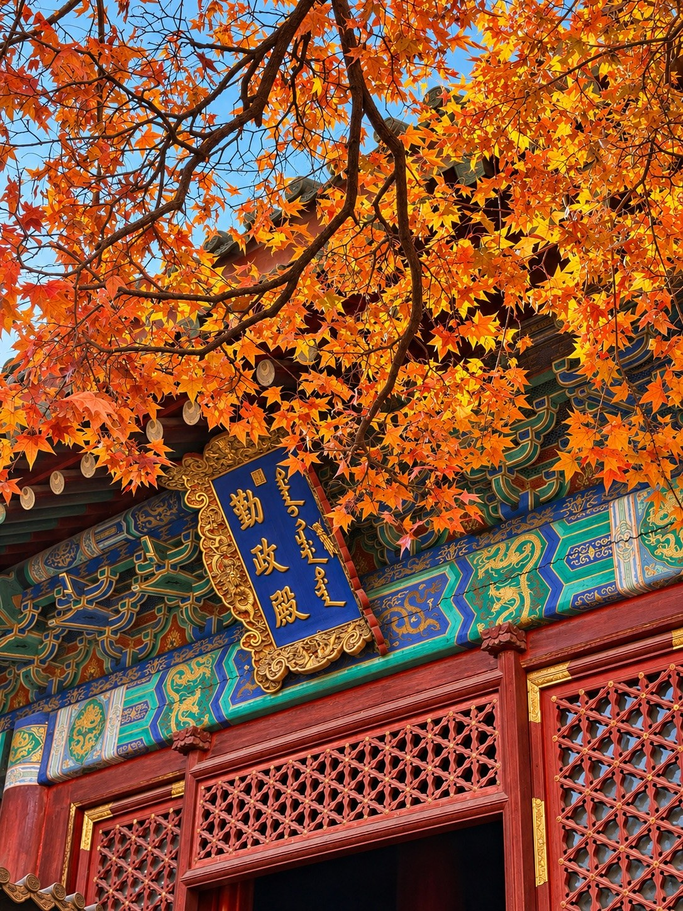

✺ BEIJING, ASTANA, AND ALL THE SMALL ENCOUNTERS
The Art of
Noticing.
把那些微小的、美好的、
不经意的瞬间，留在这里。
香山的叶、阿斯塔纳的柱廊，还有路边走近镜头的猫。
这是属于我的、还在继续的一本摄影杂志。



Collecting moments, not milestones.
生活不是每一天都特别。
但总有值得记住的瞬间。
某只主动靠近的猫，一道偶然遇见的晚霞，一座陌生城市里的建筑。它们没有必要属于同一座城市、同一个季节，甚至不需要一个宏大的故事。
这是一本慢慢长大的摄影杂志。今天多了一页，明天也许又有新的故事。
A few little stories.
每一章都来自真实的照片。
它们也会出现在季节与足迹里。


把那一刻，慢慢拼好。
从昆明湖的落日开始，照片碎成许多片，
再慢慢回到原来的位置。每张照片都可以试试。
有些风景值得绕路，
有些相遇只需要刚好经过。
THE BEAUTY OF PAYING ATTENTION
The collected frames.
按章节或季节收藏瞬间。
地点不同，装裱也有自己的性格。
✳ 每一张照片，都藏着一个会动的瞬间。轻点照片，看看光线、落叶与记忆如何慢慢醒来。
展示全部照片 · 地点不明确的作品仍会留在展厅中。
上传到公开仓库的照片会出现在其他设备和访客眼前。请先去除原片中的私密 GPS；仓库内的自动同步会将新文件加入照片清单，标题和地点可随后修改。
Seasons of noticing.
点一个季节，下面的照片会真的改变。
这些是影像的季节标签，不一定是精确拍摄日期。
A map of little journeys.
从世界看两座城市，再进入某一个真实的地点。
地图只显示已确认的公共景点，不暴露照片 GPS。
A scrapbook of my own.
选喜欢的五张照片，做一页自己的旅行手帖。
拼贴只是玩法，照片才是主角。
挑选照片，写下那一天的标题、地点和心情，组合成可以带走的一页。
内容与选图自动保存在当前浏览器；导出 PNG 可以永久保存，也可以分享给朋友。
本地选图只用于这次编辑，不会自动上传到公开网站；需要长期展示的照片仍请发布到 GitHub。
Dear future me,
希望很多年之后，你再翻开这里，依然记得那天的风，路边的猫，陌生城市的屋顶，还有每一场意料之外的日落。
希望你一直愿意停下来，看一眼那些并不轰轰烈烈，却让生活悄悄发光的小事。
Keep noticing. Keep collecting.
Love, Sunny ♡